Linear Functions
Just as with the growth of a bamboo plant, there are many situations that involve constant change over time. Consider, for example, the first commercial maglev train in the world, the Shanghai MagLev Train (Figure 1). It carries passengers comfortably for a 30-kilometer trip from the airport to the subway station in only eight minutes.http://www.chinahighlights.com/shanghai/transportation/maglev-train.htm
Suppose a maglev train were to travel a long distance, and that the train maintains a constant speed of 83 meters per second for a period of time once it is 250 meters from the station. How can we analyze the train’s distance from the station as a function of time? In this section, we will investigate a kind of function that is useful for this purpose, and use it to investigate real-world situations such as the train’s distance from the station at a given point in time.
Representing Linear Functions
The function describing the train’s motion is a linear function, which is defined as a function with a constant rate of change, that is, a polynomial of degree 1. There are several ways to represent a linear function, including word form, function notation, tabular form, and graphical form. We will describe the train’s motion as a function using each method.
Representing a Linear Function in Word Form
Let’s begin by describing the linear function in words. For the train problem we just considered, the following word sentence may be used to describe the function relationship.
- The train’s distance from the station is a function of the time during which the train moves at a constant speed plus its original distance from the station when it began moving at constant speed.
The speed is the rate of change. Recall that a rate of change is a measure of how quickly the dependent variable changes with respect to the independent variable. The rate of change for this example is constant, which means that it is the same for each input value. As the time (input) increases by 1 second, the corresponding distance (output) increases by 83 meters. The train began moving at this constant speed at a distance of 250 meters from the station.
Representing a Linear Function in Function Notation
Another approach to representing linear functions is by using function notation. One example of function notation is an equation written in the form known as the slope-intercept form of a line, where is the input value, is the rate of change, and is the initial value of the dependent variable.
In the example of the train, we might use the notation in which the total distance is a function of the time The rate, is 83 meters per second. The initial value of the dependent variable is the original distance from the station, 250 meters. We can write a generalized equation to represent the motion of the train.
Representing a Linear Function in Tabular Form
A third method of representing a linear function is through the use of a table. The relationship between the distance from the station and the time is represented in Figure 2. From the table, we can see that the distance changes by 83 meters for every 1 second increase in time.
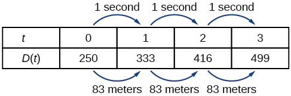
Representing a Linear Function in Graphical Form
Another way to represent linear functions is visually, using a graph. We can use the function relationship from above, to draw a graph, represented in Figure 3. Notice the graph is a line. When we plot a linear function, the graph is always a line.
The rate of change, which is constant, determines the slant, or slope of the line. The point at which the input value is zero is the vertical intercept, or y-intercept, of the line. We can see from the graph in Figure 3 that the y-intercept in the train example we just saw is and represents the distance of the train from the station when it began moving at a constant speed.
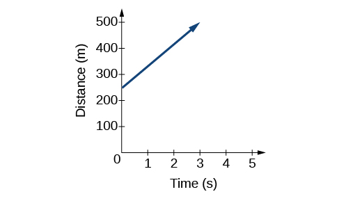
Notice that the graph of the train example is restricted, but this is not always the case. Consider the graph of the line Ask yourself what numbers can be input to the function, that is, what is the domain of the function? The domain is comprised of all real numbers because any number may be doubled, and then have one added to the product.
Using a Linear Function to Find the Pressure on a Diver
The pressure, in pounds per square inch (PSI) on the diver in Figure 4 depends upon her depth below the water surface, in feet. This relationship may be modeled by the equation, Restate this function in words.
Solution
To restate the function in words, we need to describe each part of the equation. The pressure as a function of depth equals four hundred thirty-four thousandths times depth plus fourteen and six hundred ninety-six thousandths.
Determining whether a Linear Function Is Increasing, Decreasing, or Constant
The linear functions we used in the two previous examples increased over time, but not every linear function does. A linear function may be increasing, decreasing, or constant. For an increasing function, as with the train example, the output values increase as the input values increase. The graph of an increasing function has a positive slope. A line with a positive slope slants upward from left to right as in Figure 5(a). For a decreasing function, the slope is negative. The output values decrease as the input values increase. A line with a negative slope slants downward from left to right as in Figure 5(b). If the function is constant, the output values are the same for all input values so the slope is zero. A line with a slope of zero is horizontal as in Figure 5(c).
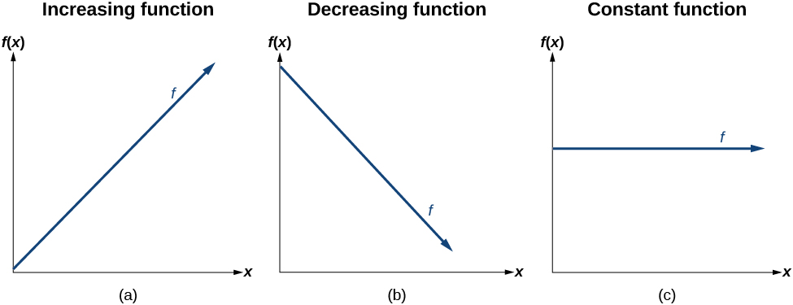
Deciding whether a Function Is Increasing, Decreasing, or Constant
Studies from the early 2010s indicated that teens sent about 60 texts a day, while more recent data indicates much higher messaging rates among all users, particularly considering the various apps with which people can communicate. For each of the following scenarios, find the linear function that describes the relationship between the input value and the output value. Then, determine whether the graph of the function is increasing, decreasing, or constant.
- ⓐ The total number of texts a teen sends is considered a function of time in days. The input is the number of days, and output is the total number of texts sent.
- ⓑ A person has a limit of 500 texts per month in their data plan. The input is the number of days, and output is the total number of texts remaining for the month.
- ⓒ A person has an unlimited number of texts in their data plan for a cost of $50 per month. The input is the number of days, and output is the total cost of texting each month.
Solution
Analyze each function.
- ⓐ The function can be represented as where is the number of days. The slope, 60, is positive so the function is increasing. This makes sense because the total number of texts increases with each day.
- ⓑ The function can be represented as where is the number of days. In this case, the slope is negative so the function is decreasing. This makes sense because the number of texts remaining decreases each day and this function represents the number of texts remaining in the data plan after days.
- ⓒ The cost function can be represented as because the number of days does not affect the total cost. The slope is 0 so the function is constant.
Calculating and Interpreting Slope
In the examples we have seen so far, we have had the slope provided for us. However, we often need to calculate the slope given input and output values. Given two values for the input, and and two corresponding values for the output, and —which can be represented by a set of points, and —we can calculate the slope as follows
where is the vertical displacement and is the horizontal displacement. Note in function notation two corresponding values for the output and for the function and so we could equivalently write
Figure 6 indicates how the slope of the line between the points, and is calculated. Recall that the slope measures steepness. The greater the absolute value of the slope, the steeper the line is.
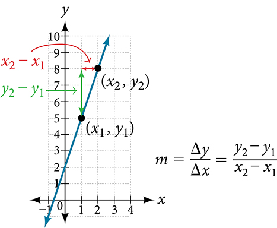
Finding the Slope of a Linear Function
If is a linear function, and and are points on the line, find the slope. Is this function increasing or decreasing?
Solution
The coordinate pairs are and To find the rate of change, we divide the change in output by the change in input.
We could also write the slope as The function is increasing because
Analysis
As noted earlier, the order in which we write the points does not matter when we compute the slope of the line as long as the first output value, or y-coordinate, used corresponds with the first input value, or x-coordinate, used.
Finding the Population Change from a Linear Function
The population of a city increased from 23,400 to 27,800 between 2008 and 2012. Find the change of population per year if we assume the change was constant from 2008 to 2012.
Solution
The rate of change relates the change in population to the change in time. The population increased by people over the four-year time interval. To find the rate of change, divide the change in the number of people by the number of years.
So the population increased by 1,100 people per year.
Analysis
Because we are told that the population increased, we would expect the slope to be positive. This positive slope we calculated is therefore reasonable.
Writing the Point-Slope Form of a Linear Equation
Up until now, we have been using the slope-intercept form of a linear equation to describe linear functions. Here, we will learn another way to write a linear function, the point-slope form.
The point-slope form is derived from the slope formula.
Keep in mind that the slope-intercept form and the point-slope form can be used to describe the same function. We can move from one form to another using basic algebra. For example, suppose we are given an equation in point-slope form, . We can convert it to the slope-intercept form as shown.
Therefore, the same line can be described in slope-intercept form as
Writing the Equation of a Line Using a Point and the Slope
The point-slope form is particularly useful if we know one point and the slope of a line. Suppose, for example, we are told that a line has a slope of 2 and passes through the point We know that and that and We can substitute these values into the general point-slope equation.
If we wanted to then rewrite the equation in slope-intercept form, we apply algebraic techniques.
Both equations, and describe the same line. See Figure 7.

Writing Linear Equations Using a Point and the Slope
Write the point-slope form of an equation of a line with a slope of 3 that passes through the point Then rewrite it in the slope-intercept form.
Solution
Let’s figure out what we know from the given information. The slope is 3, so We also know one point, so we know and Now we can substitute these values into the general point-slope equation.
Then we use algebra to find the slope-intercept form.
Writing the Equation of a Line Using Two Points
The point-slope form of an equation is also useful if we know any two points through which a line passes. Suppose, for example, we know that a line passes through the points and We can use the coordinates of the two points to find the slope.
Now we can use the slope we found and the coordinates of one of the points to find the equation for the line. Let use (0, 1) for our point.
As before, we can use algebra to rewrite the equation in the slope-intercept form.
Both equations describe the line shown in Figure 8.
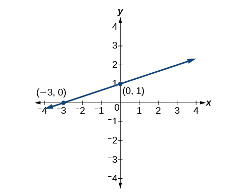
Writing Linear Equations Using Two Points
Write the point-slope form of an equation of a line that passes through the points (5, 1) and (8, 7). Then rewrite it in the slope-intercept form.
Solution
Let’s begin by finding the slope.
So Next, we substitute the slope and the coordinates for one of the points into the general point-slope equation. We can choose either point, but we will use
The point-slope equation of the line is To rewrite the equation in slope-intercept form, we use algebra.
The slope-intercept equation of the line is
Writing and Interpreting an Equation for a Linear Function
Now that we have written equations for linear functions in both the slope-intercept form and the point-slope form, we can choose which method to use based on the information we are given. That information may be provided in the form of a graph, a point and a slope, two points, and so on. Look at the graph of the function in Figure 9.
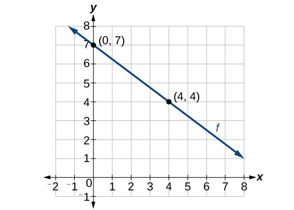
We are not given the slope of the line, but we can choose any two points on the line to find the slope. Let’s choose and We can use these points to calculate the slope.
Now we can substitute the slope and the coordinates of one of the points into the point-slope form.
If we want to rewrite the equation in the slope-intercept form, we would find
If we wanted to find the slope-intercept form without first writing the point-slope form, we could have recognized that the line crosses the y-axis when the output value is 7. Therefore, We now have the initial value and the slope so we can substitute and into the slope-intercept form of a line.
So the function is and the linear equation would be
Writing an Equation for a Linear Function
Write an equation for a linear function given a graph of shown in Figure 10.
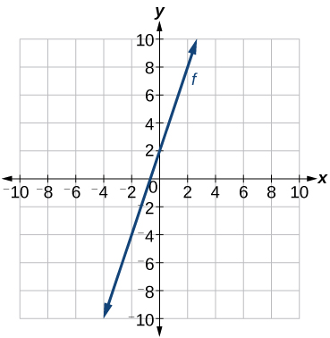
Solution
Identify two points on the line, such as and Use the points to calculate the slope.
Substitute the slope and the coordinates of one of the points into the point-slope form.
We can use algebra to rewrite the equation in the slope-intercept form.
Analysis
This makes sense because we can see from Figure 11 that the line crosses the y-axis at the point , which is the y-intercept, so
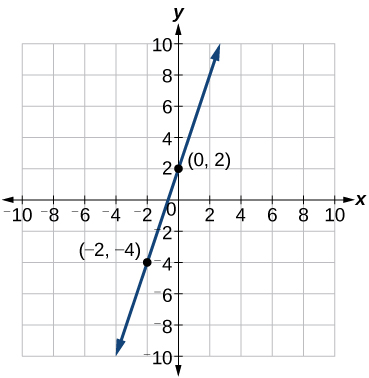
Writing an Equation for a Linear Cost Function
Suppose Ben starts a company in which he incurs a fixed cost of $1,250 per month for the overhead, which includes his office rent. His production costs are $37.50 per item. Write a linear function where is the cost for items produced in a given month.
Solution
The fixed cost is present every month, $1,250. The costs that can vary include the cost to produce each item, which is $37.50 for Ben. The variable cost, called the marginal cost, is represented by The cost Ben incurs is the sum of these two costs, represented by
Analysis
If Ben produces 100 items in a month, his monthly cost is represented by
So his monthly cost would be $5,000.
Writing an Equation for a Linear Function Given Two Points
If is a linear function, with , and , find an equation for the function in slope-intercept form.
Solution
We can write the given points using coordinates.
We can then use the points to calculate the slope.
Substitute the slope and the coordinates of one of the points into the point-slope form.
We can use algebra to rewrite the equation in the slope-intercept form.
Modeling Real-World Problems with Linear Functions
In the real world, problems are not always explicitly stated in terms of a function or represented with a graph. Fortunately, we can analyze the problem by first representing it as a linear function and then interpreting the components of the function. As long as we know, or can figure out, the initial value and the rate of change of a linear function, we can solve many different kinds of real-world problems.
Using a Linear Function to Determine the Number of Songs in a Music Collection
Marcus currently has 200 songs in his music collection. Every month, he adds 15 new songs. Write a formula for the number of songs, in his collection as a function of time, the number of months. How many songs will he own in a year?
Solution
The initial value for this function is 200 because he currently owns 200 songs, so which means that
The number of songs increases by 15 songs per month, so the rate of change is 15 songs per month. Therefore we know that We can substitute the initial value and the rate of change into the slope-intercept form of a line.

We can write the formula
With this formula, we can then predict how many songs Marcus will have in 1 year (12 months). In other words, we can evaluate the function at
Marcus will have 380 songs in 12 months.
Analysis
Notice that N is an increasing linear function. As the input (the number of months) increases, the output (number of songs) increases as well.
Using a Linear Function to Calculate Salary Plus Commission
Working as an insurance salesperson, Ilya earns a base salary plus a commission on each new policy. Therefore, Ilya’s weekly income, depends on the number of new policies, he sells during the week. Last week he sold 3 new policies, and earned $760 for the week. The week before, he sold 5 new policies and earned $920. Find an equation for and interpret the meaning of the components of the equation.
Solution
The given information gives us two input-output pairs: and We start by finding the rate of change.
Keeping track of units can help us interpret this quantity. Income increased by $160 when the number of policies increased by 2, so the rate of change is $80 per policy. Therefore, Ilya earns a commission of $80 for each policy sold during the week.
We can then solve for the initial value.
The value of is the starting value for the function and represents Ilya’s income when or when no new policies are sold. We can interpret this as Ilya’s base salary for the week, which does not depend upon the number of policies sold.
We can now write the final equation.
Our final interpretation is that Ilya’s base salary is $520 per week and he earns an additional $80 commission for each policy sold.
Using Tabular Form to Write an Equation for a Linear Function
Table 1 relates the number of rats in a population to time, in weeks. Use the table to write a linear equation.
| w, number of weeks | 0 | 2 | 4 | 6 |
| P(w), number of rats | 1000 | 1080 | 1160 | 1240 |
Solution
We can see from the table that the initial value for the number of rats is 1000, so
Rather than solving for we can tell from looking at the table that the population increases by 80 for every 2 weeks that pass. This means that the rate of change is 80 rats per 2 weeks, which can be simplified to 40 rats per week.
If we did not notice the rate of change from the table we could still solve for the slope using any two points from the table. For example, using and
Key Equations
| slope-intercept form of a line | |
| slope | |
| point-slope form of a line |
Key Concepts
- The ordered pairs given by a linear function represent points on a line.
- Linear functions can be represented in words, function notation, tabular form, and graphical form. See Example 1.
- The rate of change of a linear function is also known as the slope.
- An equation in the slope-intercept form of a line includes the slope and the initial value of the function.
- The initial value, or y-intercept, is the output value when the input of a linear function is zero. It is the y-value of the point at which the line crosses the y-axis.
- An increasing linear function results in a graph that slants upward from left to right and has a positive slope.
- A decreasing linear function results in a graph that slants downward from left to right and has a negative slope.
- A constant linear function results in a graph that is a horizontal line.
- Analyzing the slope within the context of a problem indicates whether a linear function is increasing, decreasing, or constant. See Example 2.
- The slope of a linear function can be calculated by dividing the difference between y-values by the difference in corresponding x-values of any two points on the line. See Example 3 and Example 4.
- The slope and initial value can be determined given a graph or any two points on the line.
- One type of function notation is the slope-intercept form of an equation.
- The point-slope form is useful for finding a linear equation when given the slope of a line and one point. See Example 5.
- The point-slope form is also convenient for finding a linear equation when given two points through which a line passes. See Example 6.
- The equation for a linear function can be written if the slope and initial value are known. See Example 7, Example 8, and Example 9.
- A linear function can be used to solve real-world problems. See Example 10 and Example 11.
- A linear function can be written from tabular form. See Example 12.
Section Exercises
Verbal
Terry is skiing down a steep hill. Terry's elevation, in feet after seconds is given by Write a complete sentence describing Terry’s starting elevation and how it is changing over time.
Solution
Terry starts at an elevation of 3000 feet and descends 70 feet per second.
Maria is climbing a mountain. Maria's elevation, in feet after minutes is given by Write a complete sentence describing Maria’s starting elevation and how it is changing over time.
Jessica is walking home from a friend’s house. After 2 minutes she is 1.4 miles from home. Twelve minutes after leaving, she is 0.9 miles from home. What is her rate in miles per hour?
Solution
3 miles per hour
Sonya is currently 10 miles from home and is walking farther away at 2 miles per hour. Write an equation for her distance from home t hours from now.
A boat is 100 miles away from the marina, sailing directly toward it at 10 miles per hour. Write an equation for the distance of the boat from the marina after t hours.
Solution
Timmy goes to the fair with $40. Each ride costs $2. How much money will he have left after riding rides?
Algebraic
For the following exercises, determine whether the equation of the curve can be written as a linear function.
Solution
Yes.
Solution
No.
Solution
No.
Solution
No.
For the following exercises, determine whether each function is increasing or decreasing.
Solution
Increasing.
Solution
Decreasing.
Solution
Decreasing.
Solution
Increasing.
Solution
Decreasing.
For the following exercises, find the slope of the line that passes through the two given points.
and
Solution
3
and
and
Solution
and
and
Solution
For the following exercises, given each set of information, find a linear equation satisfying the conditions, if possible.
and
and
Solution
and
Passes through and
Solution
Passes through and
Passes through and
Solution
x intercept at and y intercept at
x intercept at and y intercept at
Solution
Graphical
For the following exercises, find the slope of the lines graphed.
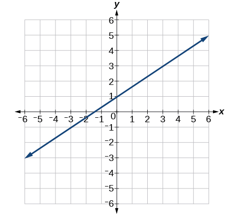
Solution
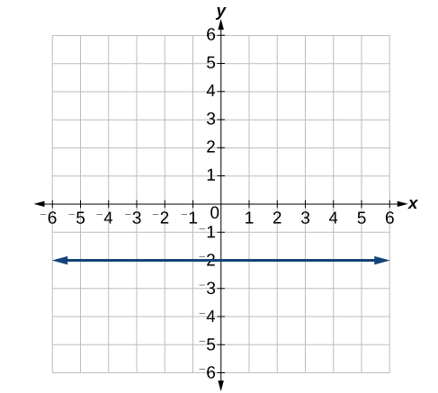
For the following exercises, write an equation for the lines graphed.
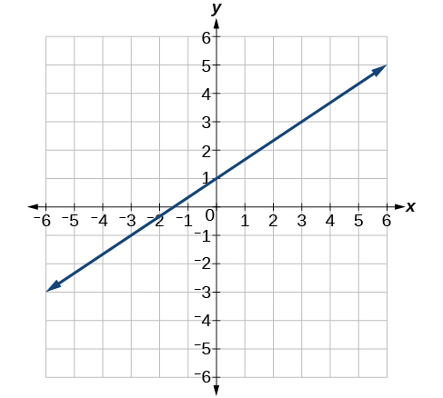
Solution
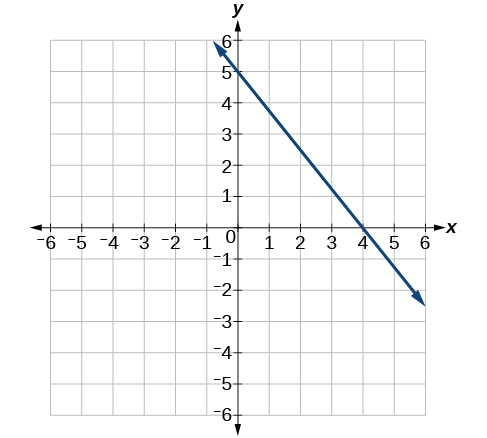
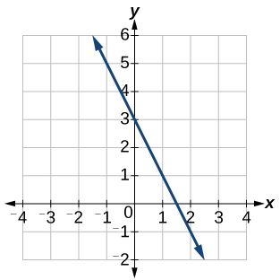
Solution
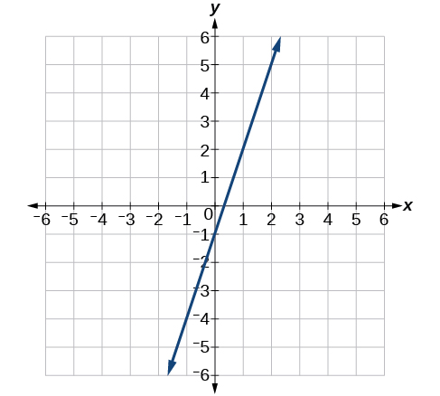
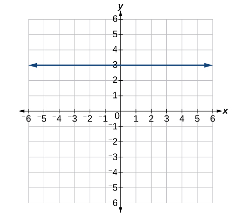
Solution
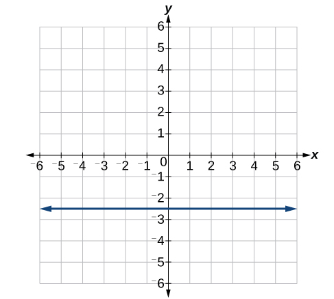
Numeric
For the following exercises, which of the tables could represent a linear function? For each that could be linear, find a linear equation that models the data.
| 0 | 5 | 10 | 15 | |
| 5 | –10 | –25 | –40 |
Solution
Linear,
| 0 | 5 | 10 | 15 | |
| 5 | 30 | 105 | 230 |
| 0 | 5 | 10 | 15 | |
| –5 | 20 | 45 | 70 |
Solution
Linear,
| 5 | 10 | 20 | 25 | |
| 13 | 28 | 58 | 73 |
| 0 | 2 | 4 | 6 | |
| 6 | –19 | –44 | –69 |
Solution
Linear,
| 2 | 4 | 6 | 8 | |
| –4 | 16 | 36 | 56 |
| 2 | 4 | 6 | 8 | |
| –4 | 16 | 36 | 56 |
Solution
Linear,
| 0 | 2 | 6 | 8 | |
| 6 | 31 | 106 | 231 |
Technology
If is a linear function, find an equation for the function.
Solution
Graph the function on a domain of Enter the function in a graphing utility. For the viewing window, set the minimum value of to be and the maximum value of to be
Graph the function on a domain of
Solution
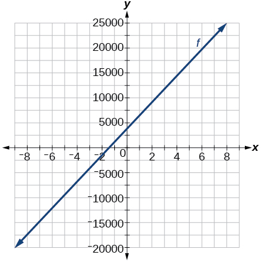
Table 3 shows the input, and output, for a linear function a. Fill in the missing values of the table. b. Write the linear function round to 3 decimal places.
| –10 | 5.5 | 67.5 | b | |
| 30 | –26 | a | –44 |
Table 4 shows the input, and output, for a linear function a. Fill in the missing values of the table. b. Write the linear function
| 0.5 | 0.8 | 12 | b | |
| 400 | 700 | a | 1,000,000 |
Solution
a. ; b.
Graph the linear function on a domain of for the function whose slope is and y-intercept is . Label the points for the input values of and
Graph the linear function on a domain of for the function whose slope is 75 and y-intercept is . Label the points for the input values of and
Solution
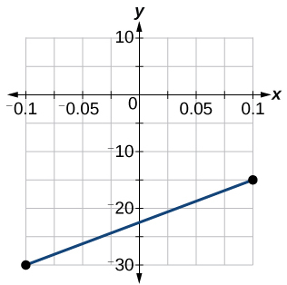
Extensions
Find the value of if a linear function goes through the following points and has the following slope:
Solution
Find the value of y if a linear function goes through the following points and has the following slope:
Find the equation of the line that passes through the following points: and
Solution
Find the equation of the line that passes through the following points: and
Find the equation of the line that passes through the following points: and
Solution
Real-World Applications
At noon, a barista notices that they have $20 in their tip jar. If the barista makes an average of $0.50 from each customer, how much will they have in the tip jar if they serve more customers during the shift?
A gym membership with two personal training sessions costs $125, while gym membership with five personal training sessions costs $260. What is cost per session?
Solution
$45 per training session.
A clothing business finds there is a linear relationship between the number of shirts, it can sell and the price, it can charge per shirt. In particular, historical data shows that 1,000 shirts can be sold at a price of , while 3,000 shirts can be sold at a price of $22. Find a linear equation in the form that gives the price they can charge for shirts.
A phone company charges for service according to the formula: where is the number of minutes talked, and is the monthly charge, in dollars. Find and interpret the rate of change and initial value.
Solution
The rate of change is 0.1. For every additional minute talked, the monthly charge increases by $0.1 or 10 cents. The initial value is 24. When there are no minutes talked, initially the charge is $24.
A farmer finds there is a linear relationship between the number of bean stalks, she plants and the yield, each plant produces. When she plants 30 stalks, each plant yields 30 oz of beans. When she plants 34 stalks, each plant produces 28 oz of beans. Find a linear relationship in the form that gives the yield when stalks are planted.
A city’s population in the year 1960 was 287,500. In 1989 the population was 275,900. Compute the rate of growth of the population and make a statement about the population rate of change in people per year.
Solution
The slope is This means for every year between 1960 and 1989, the population dropped by 400 per year in the city.
A town’s population has been growing linearly. In 2003, the population was 45,000, and the population has been growing by 1,700 people each year. Write an equation, for the population years after 2003.
Suppose that average annual income (in dollars) for the years 1990 through 1999 is given by the linear function: where is the number of years after 1990. Which of the following interprets the slope in the context of the problem?
- As of 1990, average annual income was $23,286.
- In the ten-year period from 1990–1999, average annual income increased by a total of $1,054.
- Each year in the decade of the 1990s, average annual income increased by $1,054.
- Average annual income rose to a level of $23,286 by the end of 1999.
Solution
c.
When temperature is 0 degrees Celsius, the Fahrenheit temperature is 32. When the Celsius temperature is 100, the corresponding Fahrenheit temperature is 212. Express the Fahrenheit temperature as a linear function of the Celsius temperature,
- Find the rate of change of Fahrenheit temperature for each unit change temperature of Celsius.
- Find and interpret
- Find and interpret
Analysis
The initial value, 14.696, is the pressure in PSI on the diver at a depth of 0 feet, which is the surface of the water. The rate of change, or slope, is 0.434 PSI per foot. This tells us that the pressure on the diver increases 0.434 PSI for each foot her depth increases.